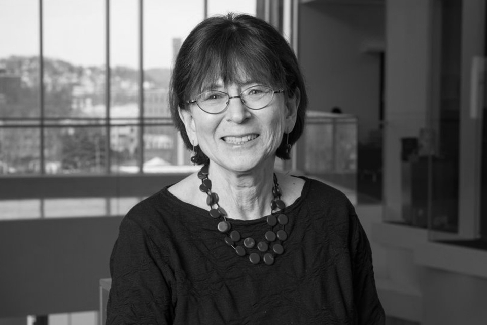
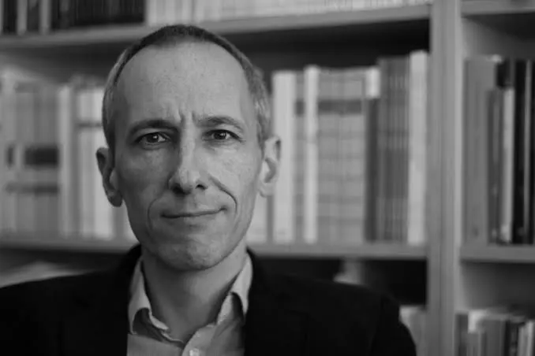

When: Sunday, October 11, 10:30 AM
With: Lenore Blum, Johannes Kleiner, Camilo Miguel Signorelli



A week-long seminar series co-organized by projet.y and the Association for Mathematical Consciousness Science (MoC7), bringing together philosophers, mathematicians and cognitive scientists to explore consciousness at the crossroads of mathematics, phenomenology and the mind.
University of Copenhagen
October 11–16, 2026
Live on YouTube
When: Sunday, October 11, 10:30 AM
With: Lenore Blum, Johannes Kleiner, Camilo Miguel Signorelli


When: Monday, October 12, 4:00 PM
Presented by: Dan Zahavi


When: Tuesday, October 13, 4:00 PM
Presented by: Paul G. Skokowski


When: Wednesday, October 14, 4:45 PM
Presented by: Guillaume Dumas


When: Thursday, October 15, 3:00 PM
Presented by: Nina Rajcic